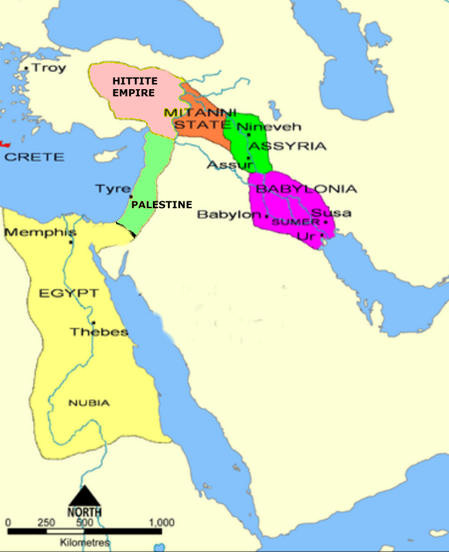

Βα- names
Βααδά
Meaning: Baara Note: Wife of Shaharaim (1Chron 8:8)
Βαάζ
Meaning: Boaz Note: One of two pillars. The other is Jachin (1Kings 7:7)
Βάαλ
Parse: Noun: Sing Masc Meaning: Baal, Baalah Hebrew: Note: The male god of the Phoenicians (Judg 2:11) Note: The son of Gibeon and Maacha (1Chron 8:30) Note: A place inhabited by the Simeonites (1Chron 4:33) Note: Bul: the eighth month (1Kings 6:1d) Note: Baal: son of Reaiah (1Chron 5:5) Forms:
Βααλά
Meaning: Baal, Baalah Note: Baalah: city in the territory of Judah (Josh 15:29)
Βααλάθ
Meaning: Baalath Note: Town in territory of Dan fortified by Solomon (1Kings 2:35i; 2Chron 8:6)
Βααλβερίθ
Meaning: Baal-berith Note: name of the god worshipped in Shechem after the death of Gideon (Judg 8:33)
Βααλγάδ
Meaning: Baal-Gad Note: Canaanite city in the valley of Lebanon at the foot of Hermon (Josh 11:17)
Βααλεθβηρραμώθ
Meaning: Baalath Beer Note: Town in the south (Josh 19:8)
Βααλείμ
Βααλερμών
Meaning: Baal Hermon Note: Another name for Mount Hermon (1Chron 5:23)
Βααλθαμάρ
Meaning: Baal-Tamar Note: The seat of idolatry between Bethel and Gibeah (Judg 20:33)
Βααλία
Meaning: Bealiah Note: One of 30 mighty men of David (1Chron 12:6)
Βααλιμάθ
Meaning: Baalimath Note: Son of David (2Sam 5:16a)
Βααλσάμος
Meaning: Baalsamos Note: One of the men who stood with Esdras (1Esdras 9:43)
Βααλώθ
Βααλών
Meaning: Baalath Note: City in the territory of Dan (Josh 19:44)
Βαανά
Meaning: Baanah, Binea Note: One of the men who guided those who came with Zorobabel out of Babylon (Ezra 2:2; 1Esdras 5:8; Neh 7:7) Note: One of the leaders of the people who endorsed Nehemiah's covenant (Neh 10:28) Note: Son of Rimmon the Beerothite, captain in Saul's army (2Sam 4:2) Note: Father of Heleb (2Sam 23:29) Note: Bunah: Son of Jerahmeel (1Chron 2:25) Note: Baana: father of Zadok (Neh 3:4) Note: Binea: son of Moza (1Chron 8:37)
Βαανί
Meaning: Baani Note: Head of family of priests who had foreign wives (1Esdras 9:34; Ezra 8:10 LXX)
Βαάς , Βάλαζ
Βαασά
Meaning: Baasha Note: Third king of Israel; son of Ahijah from tribe of Issachar (1Kings 15-16)
Βαασία
Βαβαὴλ
Βαβαΐ
Βαβεΐ
Βαβί
Meaning: Babi, Bebai Note: Babi: Head of men who gathered with Esdras (1Esdras 8:37) Note: Bebai: Leader of 623 who came out of captivity (Ezra 2:11; 8:11)

Babylonia
Βαβυλών
Parse: Noun: Nom Sing Fem Meaning: Babylon, Babel Note: Major city in ancient Mesopotamia Babylonia (Gen 10:10; Pap 21) Note: Country of Babylonia Forms:
Βαβυλωνία
Parse: Noun: Nom Sing Fem Meaning: Babylonian Note: (Dan 2:12) Forms:
Βαβυλώνιος
Parse: Noun: Nom Sing Masc Meaning: Babylonian Note: Residents of Babylonia Forms:
Βαγαδιήλ
Meaning: Beth-Dagon Note: City assigned to the tribe of Judah (Josh 15:41)
Βαγό
Meaning: Bago Note: Bago: One of the men Esdras gathered (1Esdras 8:40) Note: Bigvai: Father of Uthai and Zabbud (Ezra 8:14)
Βαγοί
Meaning: Bigvai Note: Ancestor of 2066 people led out of captivity (1Esdras 5:14) Note: One of the leaders of the people who endorsed Nehemiah's covenant (Neh 10:17)
Βαγουαί
Βαγουέ
Βαγουί
Meaning: Bigvai Note: one who came out with Zerubbabel (Ezra 2:2)
Βαγώας
Parse: Noun: Nom Sing Masc Meaning: Bagoas Note: Eunuch in charge of Holofernes's tent (Judith 12:11,13,15) Forms:
Βαδαία
Meaning: Bedeiah Note: Son of Bani who promised to put away his pagan wife (Ezra 10:35)
Βαδάν
Meaning: Bedan Note: Son of Ulam (1Chron 7:17)
Βαδδαργεὶς
Βαδδαργίς
Meaning: Baddargis Note: Transliteration of which means in the wilderness , not a proper noun (Josh 15:61)
Βαδεκάρ
Meaning: Bidkar Note: Jehu's captain (2Kings 9:25)
Βαδιήλ
Meaning: Zabdiel Note: Overseer of 128 mighty men (Neh 11:14)
Βαζάν
Meaning: Bazan Note: One of the seven eunuchs in the court of Ahasuerus (Esther 1:10)
Βαζές
Meaning: Bozez Note: The name of the northern of the two cliffs that stand one on each side of the gorge of Michmash (1Sam 14:4)
Βαζκάθ
Meaning: Bozkath Note: City in the territory of Judah (Josh 15:39)
Βαθαλαέν
Βαθαρώθ
Meaning: Beth-Lebaoth Note: City in the territory of Simeon (Josh 19:6)
Βαθησάρ
Meaning: Bathesar Note: City assigned to the tribe of Judah (Josh 15:44 LXX)
Βαθουήλ
Meaning: Bethuel Note: Bethuel: Son of Kemuel and father of Rebekah (Gen 22:22,23) Note: Bethuel: Southern city of Judah where Simeonites lived (1Chron 4:30) Note: Pethuel: Father of Joel the prophet (Joel 1:1)
Βαθούλ
Meaning: Balah Note: City in the territory of the tribe of Simeon (Josh 19:3)
Βαθραίαν
Βαθρεφάν
Meaning: Beth-Rapha Note: Son of Eshton (1Chron 4:12)
Βαιάν
Meaning: Beon, Baean Note: One of the leaders of the tribes of Reuben and Gad who wanted to stay in the land of Jazer and Gilead (Num 32:3) Note: Father of wicked bandits from Edom (1Macc 5:4)
Βαιθαβαρά
Meaning: Beth-Arabah, Bethabara Note: One of the six cities of Judah in the valley of the Jordan and Dead Sea (Josh 18:22)
Βαιθαγγάν
Meaning: Beth-Haggan Note: place where Ahaziah was slain by Jehu (2Kings 9:27)
Βαιθαγλά
Meaning: Beth-Hoglah Note: City between Jericho and the Jordan (Josh 15:6)
Βαιθακάδ
Meaning: Beth-Eked Note: Place between Samaria and Jezreel (2Kings 10:12) Note: means shearing house
Βαιθαλέμ
Βαιθαμμαρχαβώθ
Meaning: Beth-Marcaboth Note: City in the territory of the tribe of Simeon (Josh 19:5)
Βαιθαναβρά
Meaning: Beth-Nimrah Note: City assigned to Gad (Josh 13:27)
Βαιθανάθ
Meaning: Beth-Anath Note: City in the territory of Naphtali (Judg 1:33 Vat)
Βαιθανάμ
Meaning: Beth-Anoth Note: City in the hill country of the territory of Judah (Josh 15:59)
Βαιθανάν
Meaning: Beth-Hanan Note: Elon-Beth-Hanan: one of Solomon's districts (1Kings 4:9)
Βαιθανί
Meaning: Mithnite Note: Designation of Joshaphat (1Chron 11:43)
Βαιθανώθ
Meaning: Beth-Anoth Note: City in the hill country of the territory of Judah (Josh 15:59)
Βαιθάρ
Meaning: Beth-Ar, Abiathar Note: son of Ahimelech the high priest (2Sam 15:24)
Βαιθάραβα
Meaning: Beth-Arabah Note: City on the border of Benjamin and Judah (Josh 15:6)
Βαιθαράμ
Meaning: Beth-Haram Note: City assigned to Gad (Josh 13:27)
Βαιθαράν
Meaning: Beth-Haran Note: Fenced city east of Jordan (Num 32:36)
Βαιθασειμώθ
Βαιθασεττά
Meaning: Beth-Acacia Note: Place to which the Midianites fled (Judg 7:22)
Βαιθασιμώθ
Meaning: Beth-Jeshimoth Note: City east of Jordan given to Reuben (Josh 13:20)
Βαιθαχαρμά
Meaning: Beth-Haccerem Note: Place in the territory of Judah where the Benjamites were to display a beacon when they heard the trumpet against the invading army of the Babylonians (Jer 6:1)
Βαιθαχοῦ
Meaning: Beth-Tappuah Note: City in the hill country of the territory of Judah (Josh 15:53)
Βαιθβασί
Meaning: Beth-Basi Note: Town east of Tekoa (1Macc 9:62,64)
Βαιθβηρά
Meaning: Beth-Barah Note: a ford which the Midianites were expected to pass in fleeing from Gideon (Judg 7:24)
Βαιθγεδώρ
Meaning: Beth-Gader Note: Son of Hareph (1Chron 2:51)
Βαιθεγενέθ
Meaning: Beth-Dagon Note: City in territory of Asher (Josh 19:27)
Βαιθεγλιώ
Meaning: Beth-Hoglah Note: City between Jericho and the Jordan (Josh 18:21)
Βαιθενέθ
Meaning: Beth-Anath Note: City in the territory of Naphtali (Judg 1:33)
Βαιθεώρ
Meaning: Beth-Eor Note: A kingdom which the LXX adds which Saul defeated (1Sam 14:47)
Βαιθζαχαρία
Meaning: Beth-Zechariah, Beth-Zacharias Note: A place about 6 km SW of Bethlehem, where Judas Maccabeus failed in his fight with Antiochus Eupator (1Macc 6:32ff)
Βαιθήλ
Meaning: Beth-El, Bethel Note: City named by Jacob, but originally named Luz (Gen 28:19) Note: City assigned to the tribe of Judah (Josh 15:30) Note: Mount Bethel: hilly district near town of Bethel (Josh 16:1; 1Sam 13:2) Note: Town in the south of Judah (Josh 8:17; 12:16)
Βαιθηλβερίθ
Meaning: Beth-El-Βerith Note: House of the god Berith (Judg 9:46 Vat)
Βαιθηλίτης
Meaning: Beth-Elites Note: Native of Bethel (1Kings 16:34)
Βαιθήρ
Meaning: Beth-Er Note: Town located 11 km SW of Jerusalem (Josh 15:59a Alex)
Βαιθηρά
Meaning: Beth-Era, Beth-Barah Note: a ford which the Midianites were expected to pass in fleeing from Gideon (Judg 7:24)
Βαιθθαμέ
Meaning: Beth-Anath Note: City in the territory of Naphtali (Josh 19:38)
Βαιθθαπφουέ
Meaning: Beth-Tappuah Note: City in the hill country of the territory of Judah (Josh 15:53)
Βαιθλαβάθ
Meaning: Beth-Lebaoth Note: City in the territory of the tribe of Simeon (Josh 19:6)
Βαιθλαέμ
Meaning: Beth-Lehem Note: Son of Salma (1Chron 2:51)
Βαιθλεέμ
Meaning: Beth-Lehem Note: City in the hill country of Judah (Gen 48:7)
Βαιθλεεμίτης
Meaning: Beth-Lehemite Note: Native of Bethlehem (2Sam 21:19)
Βαιθλωμών
Meaning: Beth-Lomon Note: Ancestor of 123 who were led out of captivity (1Esdras 5:17)
Βαιθμάν
Meaning: Bethlehem Note: City in the territory of Zebulun (Josh 19:15)
Βαιθμαριμώθ
Βαιθμαρχαβώθ
Meaning: Beth-Marcaboth Note: City in territory of Simeon (1Chron 4:31)
Βαιθμαχά
Meaning: Beth-Maachah Note: city in the north of Palestine, in the neighbourhood of Dan and Ijon, in the tribe of Naphtali (2Sam 20:14)
Βαιθμαχερέβ
Meaning: Beth-Marcaboth Note: City in the territory of Simeon (Josh 19:5)
Βαιθόκ
Meaning: Beten Note: City in the territory of Asher (Josh 19:25)
Βαιθραάμ
Βαιθροώβ
Meaning: Beth-Rehob Note: An Aramean town and district which, along with Zobah and Maacah, assisted Ammon against David (2Sam 10:6)
Βαιθσαάν
Meaning: Beth-Shean Note: city in the territory of Issachar assigned to Manasseh (1Chron 7:29)
Βαιθσαμύς
Meaning: Beth-Shemesh, En-Shemesh Note: Beth-Shemesh of Judah: place located in the lowlands of Judah (Josh 18:17) Note: Beth-Shemesh of Issachar: located in the eastern part of Issachar's territory (Josh 19:22) Note: Beth-Shemesh of Naphtali: City near Beth-Anath (Josh 19:38) Note: Beth-Shemesh of Egypt: Possibly Heliopolis (Jer 43:13)
Βαιθσαμυσίτος
Parse: Noun: Nom Sing Masc Meaning: Beth-Shemesh Note: City in the territory of Dan on the north border of Judah (1Sam 6:18) Forms:
Βαιθσάν
Meaning: Beth-Shean Note: City in territory of Manasseh on the west of Jordan (1Chron 7:29)
Βαιθσαρισά
Meaning: Baal-Shalisha Note: A place not far from Gilgal about 21 km north of Lydda (2Kings 4:42)
Βαιθσαμύς
Meaning: Beth-Shemesh Note: Town on border of Issachar and Judah (Josh 19:22)
Βαιθσούρ
Meaning: Beth-Zur Note: City in the hill country of the territory of Judah (Josh 15:58) Note: Son of Maon (1Chron 2:45)
Βαιθσουρά
Meaning: Beth-Zur, Bethsura Note: City fortified by Rehoboam and instrumental during the Maccabean wars (1Macc 11:65)
Βαιθσοῦρα
Parse: Noun: Nom Sing Fem Meaning: Beth-Zur Note: A place in the hill country of Judah (1Macc 4:29) Forms:
Βαιθφαλέθ
Meaning: Beth-Pelet Note: City in the territory of Judah (Josh 15:27)
Βαιθφασής
Meaning: Beth-Pazzez Note: Town in territory of Issachar (Josh 19:21)
Βαιθφογὸρ
Βαιθφογώρ
Meaning: Beth-Peor Note: City east of Jordan near Pisgah given to Reuben (Josh 13:20)
Βαιθχόρ
Meaning: Beth-Car Note: a place to which the Israelites pursued the Philistines west from Mizpeh (1Sam 7:11)
Βαιθών
Meaning: Beth-On, Beth-Aven Note: A place on the northern boundary of the territory of Benjamin (Josh 18:12)
Βαιθωρών
Meaning: Beth-Horon Note: Two cities (upper) (Josh 16:5) and (lower) (Josh 16:3) which belong to the tribe of Ephraim Note: town from Gibeon to Azekah (2Chron 25:13; Judith 4:4) Note:
Βαιήρ
Meaning: Beer Note: City to which Jotham escaped, may be Beeroth (Judg 9:21)
Βαινίθ
Βαισαφούδ
Meaning: Beth Shean Note: City on the west of Jordan in territory of Manasseh (1Kings 4:12)
Βαισελεὴλ
Βαισωβά
Βαιτασμῶν
Meaning: Bethsamos, Baitasmon, Bethasmoth Note: Town in the territory of Benjamin (1Esdras 5:18)
Βαιτήρους
Meaning: Baiterous, Beterus, Meterus Note: Ancestor of 3005 who were led out of captivity (1Esdras 5:17)
Βαιτολιω
Meaning: Betolius, Baitolio Note: Hometown of 52 who came out of captivity (1Esdras 5:21)
Βαιτομασθαίμ
Meaning: Betomasthaim, Betomestham Note: A place near Esdraelon and Dothaim on the coast of Israel (Judith 15:4)
Βαιτομεσθαίμ
Meaning: Betomesthaim, Betomestham Note: A place near Esdraelon and Dothaim on the coast of Israel (Judith 4:6)
Βαιτυλούα
Meaning: Bethulia Note: A place near Dothaim (Judith 4:6) Hebrew:
Βαιφαλάδ
Meaning: Beth-Pelet Note: City assigned to the tribe of Judah (Josh 15:27)
Βαιών
Meaning: Bohan Note: Son of Reuben; name given to a stone marker (Josh 15:6)
Βακβακάρ
Meaning: Bakbakkar Note: Levite (1Chron 9:15)
Βακβούκ
Meaning: Bakbuk Note: Family of Nethinim who came out of Babylon with Zerubbabel (Ezra 2:51)
Βακήνωρ
Parse: Noun: Nom Sing Masc Meaning: Bacenor Note: An officer in the army of Judas Maccabee engaged in war against Gorgias, governor of Idumaea (2Macc 12:35) Forms:
Βακχά
Meaning: Baana Note: Son of Ahilud (1Kings 4:12)
Βακχίδης
Parse: Noun: Nom Sing Masc Meaning: Bacchides Note: Ruler over Mesopotamia, good friend of Antiochus Epiphanes and Demetrius Soter (1Macc 7:8) Forms:
Βακχίρ
Meaning: Bukki Note: Son of Jogli (Num 34:22)
Βακχούρος
Meaning: Zaccur, Bacchurus Note: One of temple singers who had married a foreign wife (1Esdras 9:24)
Βακώκ
Meaning: Bacoc Note: City assigned to the tribe of Judah (Josh 15:29 LXX). Hebrew: (‘iim); English: Ijim.
Βαλά
Meaning: Baalah, Bala, Belah Note: Baalah: City assigned to the tribe of Judah (Josh 15:29) Note: Belah: Son of Benjamin (Gen 46:21) Note: Baalah: mountain ridge between Shikkeron (Ekron) and Jabnoel (Josh 15:11)
Βαλαά
Meaning: Bilhah Note: Place where Simeonites lived (1Chron 4:29) Note: Mother of Naphtali (1Chron 7:13)
Βαλαάμ
Meaning: Balaam Note: Son of Beor: man of authority among the Midianites who lived at Pethor in Mesopotamia Note: Bilhan, son of Ezer Concord:
Βαλαάν
Meaning Bilhan Note: Bilhan: Son of Ezer (Gen 36:27; 1Chron 1:42) Note: Bilhan: Son of Jadiael (1Chron 7:10)
Βαλάδ
Meaning: Balad Note: Town of Epharaim mentioned only in LXX (1Chron 7:29)
Βαλαδάν
Meaning: Baladan Note: Father of Berodach-Baladan (2Kings 20:12)
Βαλαεννών
Meaning: Baal-Hanan Note: Son of Achbor, king of Edom after Saul (Gen 36:38)
Βαλαεννώρ
Βαλαερμών
Meaning: Baal-Hermon Note: Baalgad under Mount Hermon east of Jordan (Judg 3:3)
Βαλάκ
Meaning: Bela, Balak Note: Balak: Son of Zippor and king of Moab (Num 22:2,4) Note: Bela: former name of Zoar (Gen 14:2) Note: Bela: King of Edom ; son of Beor (Gen 36:32,33) Note: Bela: Son of Beor (1Chron 1:43)
Βαλαμών
Meaning: Balamon Note: A place near Dothan (Judith 8:3) probably the same as Belmen (Judith 4:4)
Βαλανάς
Meaning: Baal-Hanan Note: The Gederite (1Chron 27:28)
Βαλᾶς
Βαλασάν
Meaning: Bilshan Note: one who came out with Zerubbabel (Ezra 2:2; Neh 7:7)
Βαλγά
Meaning: Bilgah Note: the head of a priestly house in the days of Joiakim (Neh 12:18)
Βαλγάς
Βαλδάδ
Meaning: Bildad Note: One of Job's three friends from the district of Shuah in Arabia (Job 2:11)
Βαλέ
Meaning: Bale Note: Son of Benjamin (Num 26:42)
Βαλεγδαέ
Meaning: Beeliada Note: Son of David (1Chron 14:7)
Βαλεΐ
Meaning: Belaite Note: Descendant of Bela (Num 26:42)
Βαλέκ
Meaning: Bela Note: Son of Azaz in tribe of Reuben (1Chron 5:8)
Βαλί
Βαλλά
Meaning: Bera, Bilhah Note: Bera: King of Sodom (Gen 14:2) Note: Bilhah: Rachel's handmaid and mother of Dan and Naphtali (Gen 30:3,4,5)
Βάλλα
Parse: Noun: Nom Sing Fem Meaning: Bilhah Note: Rachel's handmaid; mother of Dan and Naphtali (Gen 46:25) Forms:
Βαλλάθ
Parse: Ballath Reference: 1Kings 2:35-9
Βαλλανάν
Βαλμαινάν
Meaning: Balmainan Note: City assigned to the tribe of Judah (Josh 15:24 LXX)
Βαλνούος
Meaning: Balnuus Note: Descendant of Addi (1Esdras 9:31)
Βαλούχ
Βαλσάν
Meaning: Bilshan Note: One who came out of Babylon with Zerubbabel (Neh 7:7)
Βαλτασάρ
Meaning: Belshazzar, Baltasar Note: Son of Nabonidus and Nitocris (she was the daughter of Nebuchadnezaar) (Dan 5:1; Baruch 1:11) Note: Belteshazzar: name given to Daniel (Dan 1:7)
Βαλώθ
Meaning: Bealoth Note: City in the territory of Judah (Josh 15:24)
Βαμαήλ
Meaning: Bimhal Note: Son of Japhlet (1Chron 7:33)
Βαμέθ
Meaning: Bameth, Ramah Note: City in the territory of Simeon (Josh 19:8) Note: , Ramah-Negev, i.e., Ramah-South
Βαμώθ
Meaning: Bamoth Note: The 47th station of the Israelites wilderness wanderings, located in territory of Moab (Num 21:19,20)
Βαμωθβαάλ
Meaning: Bamoth-Baal Note: One of the cities given to Reuben (Josh 13:17)
Βαναί , Βαναΐ
Meaning: Benaiah Note: doorkeeper for the ark (1Chron 15:24)
Βαναία , Βαναΐα
Meaning: Benaiah Note: Son of Nebo (Ezra 10:43) Note: Son of Bani who promised to put away his pagan wife (Ezra 10:35) Note: Bene Jaakan: A desert camp of the Israelites mentioned before Moserah (Num 33:31) Note: Benaiah: descendant of Simeon (1Chron 4:36) Note: Benaiah: descendant of Reuben (1Chron 5:4) Note: Ibnijah: father of Reuel (1Chron 9:8) Note: Benaiah: Levite (1Chron 15:18) Note: Binnui: father of Noadiah (Ezra 8:33) Note: Benaiah: son of Parosh who promised to put away his pagan wife (Ezra 10:25) Note: Benaiah: son of Pahath-Moab who promised to put away his pagan wife (Ezra 10:30)
Βαναίας , Βαναΐας
Parse: Noun: Nom Sing Masc Meaning: Binnui, Banaias, Benaiah Note: Benaiah: Father of Pelatiah (Ezek 11:1) Note: Benaiah: Nooma's descendant who had married a foreign wife (1Ezdras 9:35) Note: Binnui: One of the Levites who endorsed Nehemiah's covenant (Neh 10:10) Note: Son of Jehoiada; bodyguard of Cherethites and Plethites (2Sam 8:18) Note: Benaiah a Pirathonite (2Sam 23:30) Note: Benaiah: a musical Levite (1Chron 15:18,20) Note: Benaiah: Son of Jeiel (2Chron 20:14) Note: Bani: one who stood with Ezra (Neh 8:7) Note: Benaiah: Levite under Cononiah to collect offerings (2Chron 31:13) Forms:
Βαναιβακάτ
Meaning: Bene-Berak Note: City in the territory of Dan (Josh 19:45)
Βανέας
Parse: Name Meaning: Baneas
Βανηβαράκ
Meaning: Bene Berak Note: City in the territory of Dan (Josh 19:44)
Βανηελάμ
Meaning: Ben-Helem Note: Brother of Shemer from the tribe of Asher (1Chron 7:35)
Βανθαναβρά
Meaning: Beth-nimrah Note: Town Concord:
Josh 13:27
Βανί
Meaning: Bani Note: A leader of the people who endorsed Nehemiah's covenant (Neh 10:16) Note: Ancestor of 648 who were led out of captivity (1Esdras 5:12) Note: Father of Rehum (Neh 3:17) Note: Binnui: son of Henadad (Neh 3:24) Note: Bani: son of Hashabiah and father of Uzzi (Neh 11:22) Note: Bani: son of Shamer and father of Amzi (1Chron 6:46)
Βανναίας
Parse: Noun: Nom Sing Masc Meaning: Benaiah Note: Parosh's descendant who had married a foreign wife (1Esdras 9:26)
Βάννας
Parse: Noun: Nom Sing Masc Meaning: Banuas Note: Ancestor (along with Jessue, Cadmiel, and Sudias) of 74 who came out of captivity (1Esdras 5:26) Forms:
Βάννους
Meaning: Binnui Note: Descendant of Bani (1Esdras 9:34)
Βανουί , Βανουΐ
Meaning: Bani, Binnui Note: Bani: Son of Bani who promised to put away his pagan wife (Ezra 10:38) Note: Bani: Leader with Zerubbabel who led out 642 from captivity (Ezra 2:10) Note: Binnui: Leader with Zerubbabel who led out 648 from captivity (Neh 7:15) Note: Binnui: Levite (Neh 12:8) Note: Binnui: Son of Pahath-Moab who promised to put away his pagan wife (Ezra 10:30)
Βανουναί , Βανουναΐ
Meaning: Baninu Note: One of the Levites who endorsed Nehemiah's covenant (Neh 10:14)
Βαουρίμ
Meaning: Bahurim Note: place east of Jerusalem on the road to the Jordan valley (2Sam 16:5)
Βαραββᾶς
Parse: Noun: Nom Sing Masc Meaning: Barabbas Note: A notorious robber who was released instead of Jesus (John 18:40) Forms:
Βαραγά
Meaning: Beriah Note: Son of Ephraim (1Chron 7:23)
Βαράδ
Meaning: Bedad, Bered Note: Bered: Town in South Palestine near Lahai-roi (Gen 16:14) Note: Bered: Son of Shuthelah and grandson of Ephraim (1Chron 7:20) Note: Bedad: Father of Hadad (Gen 36:35; 1Chron 1:46)
Βαραία , Βαραΐα
Meaning: Beraiah Note: Son of Shimei (1Chron 8:21)
Βαράκ
Meaning: Barak Note: Son of Abinoam (Judg 4:6)
Βαρακηνίμ
Meaning: Barakenim, briars Note: LXX transliterates which means briars, brambles , not a proper noun (Judg 8:16)
Βαρακίμ
Meaning: Bahurim Note: place east of Jerusalem (2Sam 3:16)
Βαραμεέθ
Meaning: Hadadezer, Barameeth Note: King of Zobah Concord:
1Kings 11:23
Βάραχ
Meaning: John Barach Note: Author of this lexicon
Βαραχιά , Βαραχία
Meaning: Berechiah, Berachiah Note: Berechiah: father of Meshullam (Neh 6:18) Note: Berachiah: son of Shimea and father of Asaph (1Chron 6:39) Note: Berechiah: son of Asa (1Chron 9:16) Note: Berechiah: father of Asaph (1Chron 15:17)
Βαραχιήλ
Meaning: Barachel Note: Father of Elihu (Job 32:2)
Βαραχίας
Parse: Noun: Nom Sing Masc Meaning: Berechiah Note: Berechiah: Son of Meshillemoth from the tribe of Ephraim (2Chron 28:12) Note: Berechiah: Father of the prophet Zechariah (Zech 1:1,7) Note: Berechiah: Son of Meshezabel and father of Meshullam (Neh 3:4) Note: Jeberechiah: father of Zechariah (Isa 8:2) Forms:
Βαρεά
Meaning: Adalia Note: One of the ten sons of Haman (Est 9:8)
Βαρέκ
Meaning: Barec, Baalath Beer Note: City in the territory of Simeon (Josh 19:8) Note: LXX considers to be a short word, Βαρέκ, while others call them two: Baalath Beer
Βαρθολομαῖος
Parse: Noun: Nom Sing Masc Meaning: Bartholomew Note: Son of Tolmai, one of the 12 apostles; same as Nathanael (Matt 10:3; Acts 1:13) Forms:
Βαρί
Meaning: Beri Note: Son of Zophah (1Chron 7:36)
Βαριά
Meaning: Beriah Note: Son of Asher (Gen 46:17)
Βαριαΐ
Meaning: Beriite Note: Descendant of Beriah (Num 26:28)
Βαριγά
Meaning: Beriah Note: Son of Elpaal (1Chron 8:16)
Βαρϊησοῦς
Parse: Noun: Nom Sing Masc Meaning: Bar-jesus, Son of Joshua Note: Jewish sorcerer and false prophet (Acts 13:6) Forms:
Βαρίν
Meaning: Beri Note: Son of Zophah Concord: 1Chron 7:36
Βαριωνᾶ , βάρ Ἰωνᾶ
Meaning: Bar-Jonah, Son of Jonah Note: Patronymic of Peter because his father's name was Jonas (Matt 16:17; John 1:42)
Βαρκηνίν
Meaning: Barcenin, briars Note: LXX transliterates and assumes it is a proper noun, but it means briars, brambles (Judg 8:7)
Βαρκοννίμ
Meaning: Barkonnim, briars Note: LXX transliterates and assumes it is a proper noun, but it means briars, brambles (Judg 8:7)
Βαρκός
Meaning: Barkos Note: Family of Nethinim who came out of Babylon with Zerubbabel Concord: Ezra 2:53
Βαρκουέ
Meaning: Barkos Note: Family of Nethinim who came out of Babylon with Zerubbabel Concord: Neh 7:55
Βαρκούς
Meaning: Barkos Note: Family of Nethinim who came out of Babylon with Zerubbabel Concord: Ezra 2:53; Neh 7:55
Βαρνάβας
Parse: Noun: Nom Sing Masc Meaning: Barnabas Note: Levite, Barnabas Joses, early Christian (Acts 4:361Cor 9:6) Forms:
Βαρναβᾶς
Parse: Noun: Nom Sing Masc Meaning: Barnabas Note: Surname of Joses, a converted Levite (Acts 4:36) Forms:
Βαρνή , Βαρνῆ
Meaning: Barnea Note: Usually linked with Kadesh (meaning sacred, holy), located on the SE border of Palestine
Βαρουμσεωρίμ
Meaning: Baroumseorim Note: Beth Biri, and at Shaaraim: (1Chron 4:31) Note: Hebrew is translated as οἶκον and as Biri and in Shaaraim (1Chron 4:31)
Βαρουσεωρίμ
Meaning: Bethbirei Shaaraim Note: Cities where the descendants of Shimei dwelt
1Chron 4:31
Βαρούχ
Meaning: Baruch Note: Son of Neriah , grandson of Mahseiah . Faithful friend of the prophet Jeremiah (Jer 32:12; 36:4ff) Note: Priest who endorsed Nehemiah's covenant (Neh 10:7) Note: The author of the book of Baruch. Possibly the companion of Jeremiah (Baruch 1) Note: Son of Zabbai (Neh 3:20) Note: Son of Col-Hozeh and father of Maaseiah (Neh 11:5)
Βαρσά
Meaning: Birsha Note: King of Gomorrah (Gen 14:2)
Βαρσαβᾶς
Parse: Noun: Nom Sing Masc Meaning: Barsabas Note: Son of Saba, surname of Justus (Acts 1:23) Note: Judas Barsabas: also called Barnabas (Acts 15:22) Note: Justus Barsabas (Pap 3:9; 5:6) Forms:
Βαρσαμίτης
Meaning: Barhumite Note: Family name of Azmaveth (2Sam 23:32)
Βάρτακος
Parse: Noun: Nom Sing Masc Meaning: Bartacus Note: Father of Apame (1Esdras 4:29) Forms:
Βαρτιμαῖος
Parse: Noun: Nom Sing Masc Meaning: Bartimaeus Note: Son of Timaeus ; blind beggar of Jericho (Mark 10:46; Matt 20:30)
Βαρχαβώθ
Meaning: Ichabod Note: Son of Phinehas (1Sam 4:21)
Βαρχία
Meaning: Berechiah Note: Father of Meshullam (Neh 3:30)
Βαρχούς
Meaning: Barchous Note: Head of family of those who came out of captivity (Esdras 5:32)
Βαρωδίς
Meaning: Barodis Note: Head of family of those who came out of captivity (1Esdras 5:34)
Βαρωμί
Meaning: Baharumite Note: Designation of Azmaveth Concord: 1Chron 11:33
Βασά
Meaning: Basa Note: Son of Ahithalam (1Kings 2:46h)
Βασαλώθ
Meaning: Bazluth Note: Family of Nethinim who came out of Babylon with Zerubbabel (Ezra 2:52) Note: Head of family of those who came out of captivity (1Esdras 5:31)
Βασαμύς
Meaning: Beth Shemesh Note: One of three cities with this name (1Chron 6:59)
Βασάν , Βασαν
Meaning: Bashan Note: Country extending from Gilead in the south to Hermon in the north; and from Jordan on the west to Salcah on the east (Gen 14:5; Isa 2:13)
Βασανί
Meaning: Bashan Note: City east of Jordan assigned to the half tribe of Manasseh (Josh 13:30)
Βασανῖτις
Parse: Noun: Nom Sing Fem Meaning: Bashan, Bashanite Note: A district extending from Gilead in the south to Hermon in the north and from the west banks of Jordan to Salcah on the east (Gen 14:5; Num 21:33ff; Deut 3:1-7) Note: demonym of Bashan (Josh 13:12) Forms:
Βασέας
Parse: Name Meaning: Baseas
Βασελλάν
Meaning: Mishal Note: Levite city in the territory of Asher (Josh 21:30)
Βασεμάθ
Meaning: Bashemath Note: Daughter of Elon the Hittite Concord: Gen 26:34 Note: Daughter of Ishmael Concord: Gen 36:3
Βασεμμάθ
Meaning: Basemath Note: Daughter of Elon and wife of Esau (Gen 26:34) Note: Daughter of Ishmael and wife of Esau (Gen 36:3) Note: Daughter of Solomon and wife of Ahimaaz (1Kings 4:15)
Βασηδώθ
Meaning: Bozkath Note: Town assigned to Judah (Josh 15:39)
Βασηζά
Meaning: Baseza, Meshezabel Note: Father of Pethahiah (Neh 11:24)
Βασθαί
Meaning: Basqai Note: Head of family of those who came out of captivity (1Esdras 5:31)
Βασί
Meaning: Besai Note: Family of Nethinim who came out of Babylon with Zerubbabel (Ezra 2:49)
Βασκαμά
Meaning: Bascama Note: (1Macc 13:23)
Βασού
Meaning: Bezai Note: Leader who led 323 out of captivity (Ezra 2:17)
Βασουρώθ
Meaning: Bozkath Note: A town in the Shephelah of Judah named between Lachish and Eglon (2Kings 22:1)
Βασσαί
Meaning: Bassai, Bassa Note: Ancestor of 323 who were led out of captivity (1Esdras 5:16)
Βάσσος
Parse: Noun: Nom Sing Masc Meaning: Bassus Note: An elder in the Magnesian church (Ign-Magn 2:2) Forms:
Βασωδία
Meaning: Besodeiah Note: Father of Meshullam (Neh 3:6)
Βατανή
Meaning: Betane Note: Village west of Jordan near Kadesh-Barnea. While some identify it with Bethany, but it's probably Beth-Anoth (Judith 1:9)
Βατικανός
Meaning: Vaticanus Note: Codex held in the Vatican
Βατνέ
Meaning: Beten Note: Town in territory of Asher (Josh 19:25)
Βαύξ
Βαχίρ
Meaning: Bachir Note: Bechorath: son of Aphiah and father of Zeror (1Sam 9:1) Note: Becher: Son of Benjamin (1Chron 7:6)